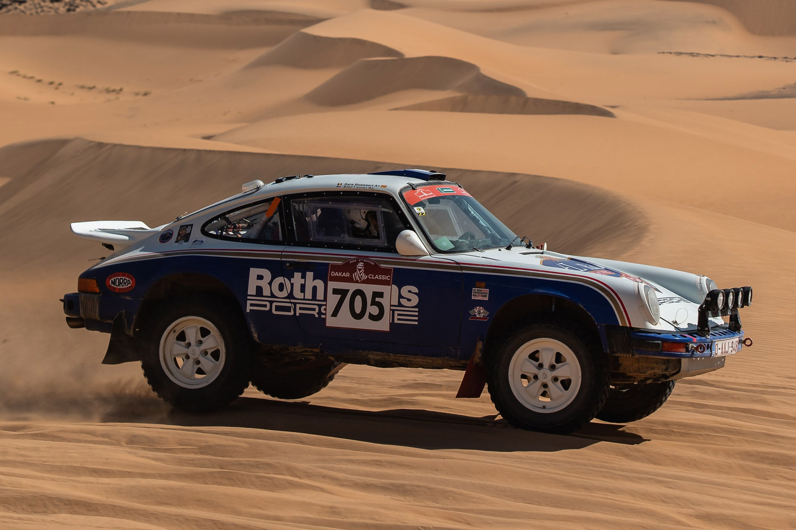
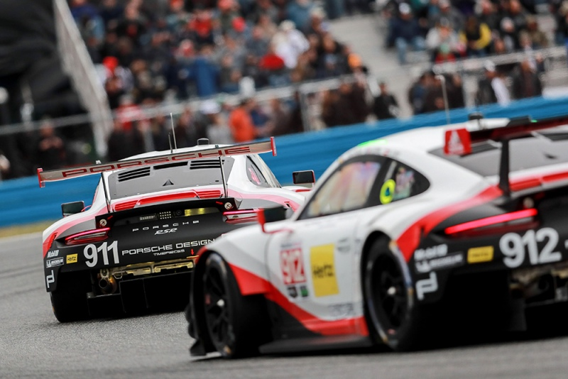
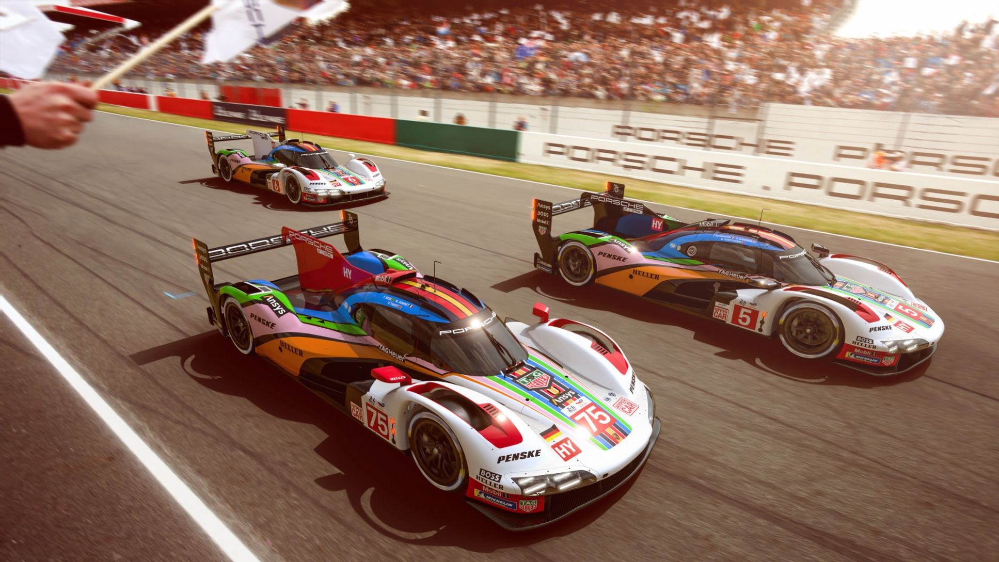
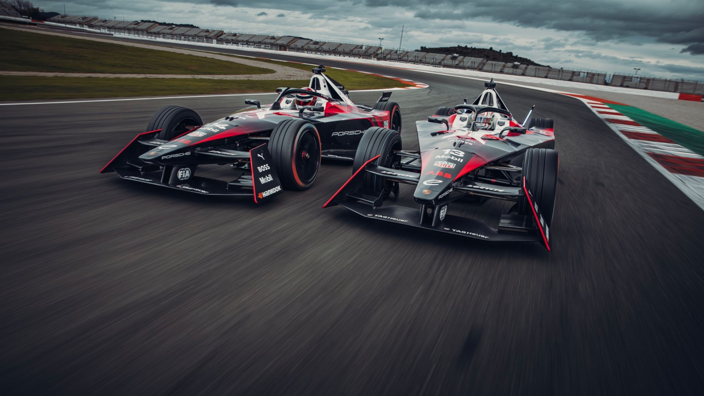

rally

Porsche has a rich history in rally
racing, particularly during the 1960s and 1970s. The most
notable Porsche rally car from that era is the Porsche 911,
which achieved significant success in various rally
championships. In the early 1960s, the Porsche 356 was the first
Porsche model to participate in rallies. It competed in events
such as the Monte Carlo Rally and the Tour de France Automobile.
However, it was the introduction of the Porsche 911 in 1963 that
truly marked Porsche's entry into the rally scene. The Porsche
911 quickly gained a reputation for its performance and
reliability, making it a popular choice for rally teams. Porsche
developed different versions of the 911 specifically for
rallying, such as the 911S and the 911 Carrera RS. These cars
featured modified suspensions, reinforced chassis, and increased
horsepower to better handle the demands of off-road racing. One
of the most iconic Porsche 911 rally cars is the Porsche 911
Carrera RS 2.7. It achieved considerable success in the early
1970s, winning events like the Tour de France Automobile and the
Monte Carlo Rally. The Porsche 911's rear-engine layout and
excellent weight distribution gave it an advantage in
challenging rally conditions. Porsche's success in rally racing
led to the creation of the Porsche 959, a groundbreaking
supercar that was designed with both on-road and off-road
capabilities. The Porsche 959 participated in the grueling
Paris-Dakar Rally in the mid-1980s and showcased the brand's
commitment to rally competition.
GT Sport

Porsche has a long and storied history
in GT motorsport, with numerous successes in various
championships and endurance races. The brand's commitment to GT
racing is evident through its participation in series such as
the FIA World Endurance Championship (WEC), IMSA WeatherTech
SportsCar Championship, and the prestigious 24 Hours of Le Mans.
One of Porsche's most successful GT racing models is the Porsche
911 GT3. Derived from the iconic 911 sports car, the GT3 variant
is designed specifically for track performance. It has achieved
numerous victories in GT championships around the world,
including the WEC and IMSA GTLM class. The Porsche 911 RSR is
another notable GT racing car from the brand. This model is
built to comply with FIA GT regulations and has proven to be
highly competitive in endurance races like the 24 Hours of Le
Mans. The 911 RSR has claimed multiple class victories in Le
Mans and has been a strong contender in other endurance events.
In recent years, Porsche expanded its GT racing program with the
introduction of the Porsche 911 GT3 R. This customer racing
version of the GT3 is designed for privateer teams and has been
successful in various GT3 championships worldwide, such as the
Blancpain GT Series and the Intercontinental GT Challenge.
le mans

Porsche has a legendary history at the
24 Hours of Le Mans, one of the most prestigious endurance races
in the world. The brand's participation and success in this race
have solidified its reputation as a dominant force in
motorsport. Porsche's first overall victory at Le Mans came in
1970 with the Porsche 917K. The 917 models continued to be
successful, with Porsche securing four more overall wins in
1971, 1976, 1977, and 1979. These victories established Porsche
as a major contender in endurance racing and helped cement the
917's status as an iconic racing car. After a hiatus from the
top category of racing, Porsche returned to Le Mans in the 1980s
with the Porsche 956 and its successor, the Porsche 962. These
Group C prototypes were dominant in their era, and between 1982
and 1987, Porsche claimed six consecutive overall victories at
Le Mans with the 956 and 962 models. Porsche's next era of
success at Le Mans came in the 1990s with the Porsche 911 GT1.
In 1996, Porsche introduced the 911 GT1-96, a purpose-built race
car that blended elements of GT and prototype racing. It went on
to secure an overall victory at Le Mans in the same year,
marking Porsche's return to the winner's circle after an absence
of 17 years.
formula-E

Porsche entered the ABB FIA Formula E
World Championship in the 2019-20 season, and has since become
one of the most successful teams in the series. The team has won
two Drivers' Championships (with Jean-Éric Vergne in 2019-20 and
Pascal Wehrlein in 2020-21) and one Teams' Championship (in
2020-21). The Porsche 99X Electric is the team's race car, and
it has been consistently one of the fastest and most reliable
cars on the grid. The car is powered by a 500kW (670hp) electric
motor and a 54kWh battery, and it can reach a top speed of over
280km/h. The TAG Heuer Porsche Formula E Team is led by Florian
Modlinger, and the team's drivers are Pascal Wehrlein, André
Lotterer, and António Félix da Costa. The team is based in
Weissach, Germany, and it has a strong technical partnership
with Williams Advanced Engineering. Porsche has been very
successful in Formula E, and the team is well-positioned to
continue winning races and championships in the years to come.
The team's focus on innovation and technology has helped it to
stay ahead of the competition, and the team's drivers are some
of the best in the world.